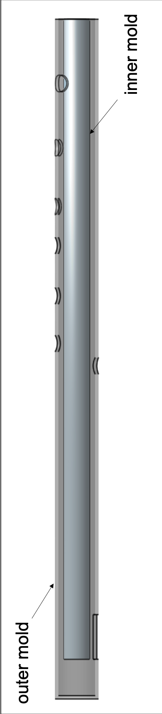

Flute
(WORK IN PROGRESS)

I learned to play the atenteben over a decade ago, as part of my primary school's music club. The atenteben is a Ghanaian bamboo flute. Since it is carved out of bamboo, the flutes are known to warp over time. Common practice is to submerge the flutes in water, to slow the warping effect. Often times, there are discrepancies in the pitch of tones. Two flutes carved by the same artisan will inevitably have discrepancies in pitch, making ensemble playing difficult for multiple flutes. I decided to make a set of molds to manufacture flutes with that could be played in ensemble. The plan is to use a set of molds, and epoxy to allow for customizable molds.
Tone Placement Theory
Firstly, I calculated the dimensions of the flute and placement of tone holes, to produce desired pitches. Several corrections including viscous and thermal effects will eventually be taken into account. The calculations are based on Musical Mathematics, by Cris Forster and Acoustical Aspects of Woodwind Instruments, by Cornelis J. Nederveen. The placement of each tone hole is calculated by the fundamental frequency of standing waves produced by a substitute tube of the same acoustic length, L_s, with a few corrections for the effects of the tone holes and embouchure holes, l_T and l_E, respectively.
Measured Frequency
To compare the theoretical pitch to the actual pitch on the atenteben, I recorded an octave and performed FFT Analysis in MATLAB.


Fabrication
Mold was first modelled in OnShape, and the prototype was made from materials from a hardware store, 3D printed parts and epoxy.
